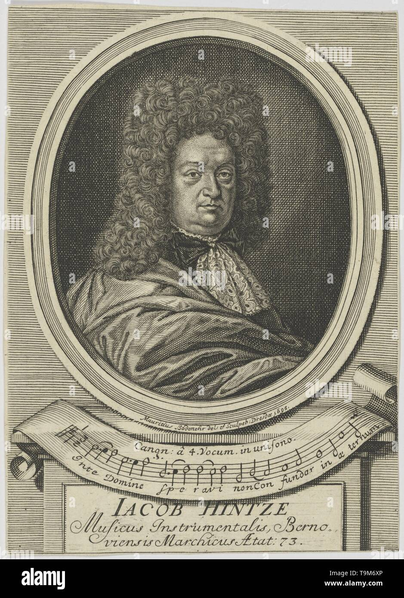
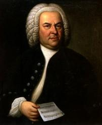
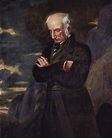

|
|
【齊來讚美主耶穌】 |
|
1 Songs of thankfulness and praise,
Refrain:
2 Manifest at Jordan’s stream,
3 Manifest in making whole |
齊來讚美主耶穌，感恩歌聲同唱和； 副歌： |
|
|
|
|
|
|

LSB 394 Song of Thankfulness and Praise 齊來讚美主耶穌 https://youtu.be/RZizAFEmC6o -
https://youtu.be/I4cg0aOczWo -
https://youtu.be/XjT2SPzLw90
Songs of Thankfulness and Praise
Hymn Information
Hymn Story/Background
Author Information

Composer Information

Tune Information
| Title: | SALZBURG (Hintze) |
| Composer: | Jakob Hintze (1678) |
| Meter: | 7.7.7.7 D |
| Incipit: | 51565 43554 32215 |
| Key: | C Major |
| Source: | Gesangbuch, Darmstadt, 1687;Praxis Pietatis Melica, Berlin, 1678;German chora |
Notes
The tune SALZBURG, named after the Austrian city made famous by Wolfgang Amadeus Mozart, was first published anonymously in the nineteenth edition of Praxis Pietatis Melica (1678); in that hymnbook's twenty-fourth edition (1690) the tune was attributed to Jakob Hintze (b. Bernau, Germany, 1622; d. Berlin, Germany, 1702). Partly as a result of the Thirty Years' War and partly to further his musical education, Hintze traveled widely as a youth, including trips to Sweden and Lithuania. In 1659 he settled in Berlin, where he served as court musician to the Elector of Brandenburg from 1666 to 1695. Hintze is known mainly for his editing of the later editions of Johann Crüger's (PHH 42) Praxis Pietatis Melica, to which he contributed some sixty-five of his original tunes.
The harmonization by Johann S. Bach (PHH 7) is simplified from his setting in his Choralgesänge (Rejoice in the Lord [231] and The Hymna1 1982 [135] both contain Bach's full harmonization). The tune is a rounded bar form (AABA) easily sung in harmony. But sing the refrain line in unison with full organ registration.
--Psalter Hymnal Handbook, 1988

Scripture References
- · · · · · · ·
Further Reflections on Scripture References
Taking Matthew 1: 1-11 as his theme for stanzas 1-3, Dix likens the journey of the wise men who came to worship the Christ to our own Christian pilgrimage. The pattern of these stanzas is "as they … so may we." Stanzas 4 and 5 are a prayer that our journey on the "narrow way" may bring us finally to glory where Christ is the light (Rev. 21:23) and where we may perfectly sing his praise.
Psalter Hymnal Handbook
Confessions and Statements of Faith References
Further Reflections on Confessions and Statements of Faith References
Throughout stanza 2, Jesus is manifested as “prophet, priest and king supreme”; using parallel language, Heidelberg Catechism, Lord’s Day 12, Question and Answer 31 explains that Jesus is “anointed with the Holy Spirit” to be our “chief prophet and teacher,” our “only high priest” and our “eternal king.”
The refrain ends by confessing that “God in flesh [is] made manifest.” Heidelberg Catechism, Lord’s Day 14, Question and Answer 35 also confesses that Jesus “took to himself, through the working of the Holy Spirit, from the flesh and blood of the virgin Mary, a truly human nature...”
齊來讚美主耶穌
Songs of Thankfulness and Praise
1
Qí lái zànměi zhǔ yēsū, gǎn'ēn gēshēng tóng chànghè;
齊來讚美主耶穌，感恩歌聲同唱和；
Songs of thankfulness and praise, Jesus, Lord, to thee we raise,
Míngxīng dǎo yǐn sān bóshì, wànshuǐqiānshān lái xúnfǎng;
明星導引三博士，萬水千山來尋訪；
Manifested by the star To the sages from afar,
Dà wèi miáo yì fā xīnzhī, zài bólìhéng jiù zhǔ jiàng.
大衛苗裔發新枝，在伯利恆救主降。
Branch of royal David's stem In Thy birth at Bethlehem:
Tàichū yǒu dàodao shì shén, wèi zhāng shén ài gān wéirén.
太初有道道是神，為彰神愛甘為人。
Anthems be to Thee addressed, God in man made manifest.
2
Yuē dàn hépàn zhǔ xiǎnxiàn, xiānzhī jìsī jūnwáng zūn;
約但河畔主顯現，先知祭司君王尊；
Manifest at Jordan's stream, Prophet, Priest, and King supreme;
Dàochéng ròushēn zhēnlǐ zhāng, qīngshuǐ biàn jiǔ quánnéng xiǎn;
道成肉身真理彰，清水變酒權能顯；
And at Cana wedding guest In the God-head manifest;
Jiā nán hūn yán xíng qí shì, jìng jiāng měijiǔ zuìhòu xiàn.
迦南婚筵行奇事，竟將美酒最後獻。
Manifest in pow'r divine, Changing water into wine;
Tàichū yǒu dàodao shì shén, wèi zhāng shén ài gān wéirén.
太初有道道是神，為彰神愛甘為人。
Anthems be to Thee addressed, God in man made manifest.
394 顯現期
齊來讚美主耶穌
Songs of Thankfulness and Praise
3
Shàngdì kè shèng èmó tóu, zhēngzhàn dāngzhōng xiǎn guāngmáng;
上帝克勝惡魔頭，爭戰當中顯光芒；
Manifest in making whole Palsied limbs and fainting soul;
Zuì zhài shèmiǎn bìng yīzhì, shēngmìng gēngxīn cì píng kāng;
罪債赦免病醫治，生命更新賜平康；
Manifest in valiant fight, Quelling all the devil's might;
Shén de zhǐyì duō ēncí, yuàn bǎ nìjìng biàn kāng zhuāng.
神的旨意多恩慈，願把逆境變康莊。
Manifest in gracious will, Ever bringing good from ill;
Tàichū yǒu dàodao shì shén, wèi zhāng shén ài gān wéirén.
太初有道道是神，為彰神愛甘為人。
Anthems be to Thee addressed, God in man made manifest.
4
Nà rì xīng zhuì tiān zāojié, rì yuè hūn hēi'àn wú guāng;
那日星墜天遭劫，日月昏黑暗無光；
Sun and moon shall darkened be, Stars shall fall, the heav'ns shall flee;
Jīdū yǒurú diànguāng shǎn, róngyào guānghuī zhòng yǎngwàng;
基督有如電光閃，榮耀光輝眾仰望；
Christ will then like lightning shine, All will see His glorious sign;
Shènglì hàotǒng xiǎng yǔzhòu, wànmín dé jiàn shénzi jiàng.
勝利號筒響宇宙，萬民得見神子降。
All will then the trumpet hear, All will see the Judge appear;
Tàichū yǒu dàodao shì shén, wèi zhāng shén ài gān wéirén.
太初有道道是神，為彰神愛甘為人。
Anthems be to Thee addressed, God in man made manifest.
（頌主聖詩127，調同LSB 892《感恩信眾，大家來》）
威廉·華茲渥斯（William Wordsworth，1770－1850），英國浪漫主義詩人[編輯]
|
威廉·華茲渥斯 William Wordsworth |
|
|---|---|
|

《威廉·華茲渥斯像》，班傑明·海頓作（國家肖像館）
|
|
| 出生 |
1770年4月7日 |
| 逝世 |
1850年4月23日（80歲） |
| 職業 | 詩人 |
| 母校 | 劍橋大學聖約翰學院 |
| 文學運動 | 浪漫主義 |
威廉·華茲渥斯（William Wordsworth，1770年4月7日－1850年4月23日），英國浪漫主義詩人，與雪萊、拜倫齊名，也是湖畔詩人的代表，曾當上桂冠詩人。其代表作有與塞繆爾·泰勒·柯勒律治合著的《抒情歌謠集》、長詩《序曲》（Prelude）、《漫遊》（Excursion）。
早年[編輯]
華茲渥斯在位於英格蘭西北部的湖區小鎮科克茅斯出生，父母為約翰·華茲渥斯（John Wordsworth，1783年去世）和安·庫克森（Ann Cookson），華茲渥斯故居（Wordsworth House）至今仍保留在當地[1]。他的妹妹多蘿西·華茲渥斯在次年出生，此外他還有一個哥哥理察（成為律師）、一個弟弟約翰（小於多蘿西，做了Earl of Abergavenny號的船長，但在1805年沉船而亡）和最小的弟弟克里斯托佛（進入教會工作，後來成為劍橋大學三一學院院長）[2]。
他的家境不錯，其父約翰是第一代朗斯代爾伯爵詹姆斯·勞瑟的律師。但由於工作關係，約翰經常出差，所以和孩子們的關係並不親密[3]。但約翰鼓勵過威廉大量閱讀，他的藏書也對拓展威廉的事業有很大幫助。威廉有時會被送到外祖父母及舅舅位於彭里斯的家中寄宿，但他和這些長輩的關係非常糟糕，甚至一度因此想要自殺。[4]
華茲華曾在科克茅斯及彭里斯的兩所學校讀書，他在彭里斯遇到了未來的妻子瑪麗·哈欽森[5]。他的母親在他八歲的時候去世，之後他那當律師的父親，就把他送到附近的小鎮霍克斯黑德的霍克斯黑德語法學校（Hawkshead Grammar School）讀書。
1787年華茲渥斯在《歐洲雜誌》（The European Magazine）上發表了一首十四行詩，此即他的處女作。同年他考入了劍橋大學的聖約翰學院，1791年獲文學學士學位[6]。在劍橋的頭兩年他還會在夏季返回霍克斯黑德的鄉間漫步，1790年則前往歐洲，周遊法國、瑞士和義大利。[7]
華茲渥斯的父親在一個貴族的手下工作，後來去世，貴族的後人支付了華茲渥斯一批遺產，在他的父親死後，華茲渥斯由叔叔監護。他的童年經歷影響對他影響甚深，和兄弟姐妹的生離、和父母的死別，都成為他作品中不斷出現的主題。
家庭[編輯]

{kind=link}
1791年11月，他前往爆發了大革命的法國，在那裡愛上了一名叫做安妮特·瓦隆（Annette Vallon）的法國女子，1792年安妮特為他誕下一女卡羅琳（Caroline）。但由於經濟問題和緊張的英法關係，他在次年返回英國。二人並未結婚。[8]
亞眠和約簽訂後，華茲渥斯在1802年和多蘿西前往加萊去見安妮特和卡羅琳，告知對方他將和自己的青梅竹馬瑪麗·哈欽森（Mary Hutchinson）結婚[8]。他寫下了十四行詩《這是一個美麗的傍晚》（It is a beauteous evening, calm and free） ，紀念他和九歲的卡羅琳的海邊散步，但此後他再未見她一面。卡羅琳在1816年結婚，華茲渥斯為她設了一筆30鎊的年金，一直支付至1835年，之後又給了一筆錢了事。[9][10] 他和瑪麗生有五個孩子，即約翰、多拉、托馬斯、凱瑟琳和威廉。
去世[編輯]
{kind=link}
華茲渥斯在1850年4月23日因胸膜炎逝世[11]，死後葬在格拉斯米爾聖奧斯瓦爾德教堂（St Oswald's Church）的墓地裡。他的遺孀瑪麗將他的自傳《序曲或一位詩人心靈的成長》（The Prelude or, Growth of a Poet's Mind; An Autobiographical Poem）付梓。